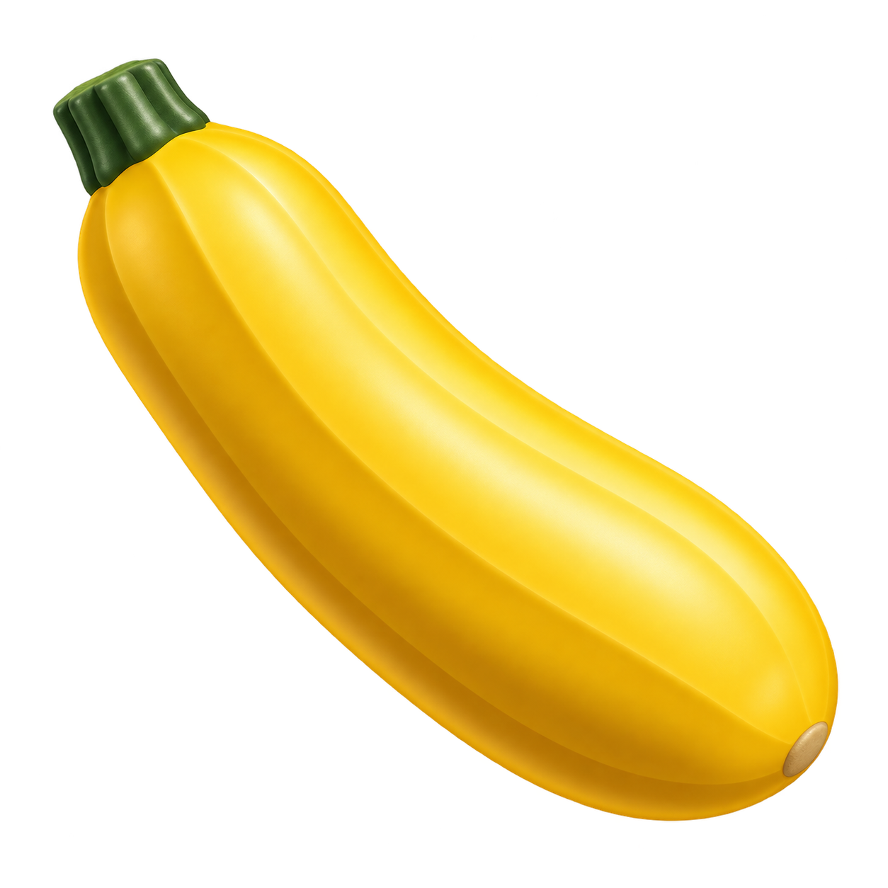

ZUCCHINI / BRAND DIRECTION 01
Golden. Simple. Recognizable.
A smooth 3D yellow zucchini with a strong green stem. The same mark across brand, app and social contexts.
Standalone mark · dark

Wordmark pairing
zucchini.
Mobile / desktop / social
Small-size proof · actual CSS pixels
16 px24 px32 px48 px64 px128 px
Design proposal · raster masters · platform masks shown as previews. The 3D effect is rendered into the images; these are not editable 3D models. No live assets have been replaced.